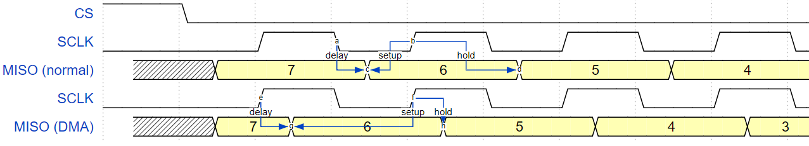

SPI მონა-დრაივერი¶
SPI Slave დრაივერი არის პროგრამა, რომელიც აკონტროლებს ESP32-ის SPI პერიფერიულ მოწყობილობებს, სანამ ისინი ფუნქციონირებენ როგორც Slave-ები.
ESP32-ის SPI პერიფერიული მოწყობილობების მიმოხილვა¶
ESP32 აერთიანებს ორ ზოგადი დანიშნულების SPI კონტროლერს, რომელთა გამოყენება შესაძლებელია როგორც მონა კვანძები, რომლებსაც მართავენ ჩიპგარე SPI მასტერ-კონტროლერი.
- SPI2, ზოგჯერ მოიხსენიება როგორც HSPI
- SPI3, ზოგჯერ მოიხსენიება როგორც VSPI
SPI2-ს და SPI3-ს აქვთ დამოუკიდებელი სიგნალის ავტობუსები ერთი და იგივე სახელებით.
ტერმინოლოგია¶
SPI მონა დრაივერთან დაკავშირებით გამოყენებული ტერმინები მოცემულია ქვემოთ მოცემულ ცხრილში.
| ტერმინი | განმარტება |
|---|---|
| მასპინძელი | ESP32-ის გარე SPI კონტროლერი, რომელიც იწყებს SPI გადაცემებს ავტობუსის მეშვეობით და მოქმედებს როგორც SPI Master. |
| მოწყობილობა | SPI მონა მოწყობილობა, ამ შემთხვევაში SPI2 და SPI3 კონტროლერები. თითოეული მოწყობილობა იზიარებს MOSI, MISO და SCLK სიგნალებს, მაგრამ აქტიურია ავტობუსზე მხოლოდ მაშინ, როდესაც ჰოსტი ადასტურებს მოწყობილობის ინდივიდუალურ CS ხაზს. |
| ავტობუსი | სიგნალის ავტობუსი, რომელიც საერთოა ერთ ჰოსტთან დაკავშირებული ყველა მოწყობილობისთვის. ზოგადად, ავტობუსი მოიცავს შემდეგ ხაზებს: MISO, MOSI, SCLK, ერთი ან მეტი CS ხაზი და, სურვილისამებრ, QUADWP და QUADHD. ამგვარად, მოწყობილობები დაკავშირებულია ერთსა და იმავე ხაზებთან, გარდა იმისა, რომ თითოეულ მოწყობილობას აქვს საკუთარი CS ხაზი. რამდენიმე მოწყობილობას ასევე შეუძლია ერთი CS ხაზის გაზიარება, თუ ის დაკავშირებულია ჩარტის მეთოდით. |
|
Master In, Slave Out, ასევე Q. მონაცემთა გადაცემა მოწყობილობიდან ჰოსტზე. |
|
Master In, Slave Out, ასევე D. მონაცემთა გადაცემა ჰოსტიდან მოწყობილობაზე. |
|
სერიული საათი. ჰოსტის მიერ გენერირებული რხევითი სიგნალი, რომელიც მონაცემთა ბიტების გადაცემას სინქრონულად ინარჩუნებს. |
|
ჩიპის შერჩევა. საშუალებას აძლევს მასპინძელს აირჩიოს ავტობუსთან დაკავშირებული ინდივიდუალური მოწყობილობა(ები) მონაცემების გასაგზავნად ან მისაღებად. |
|
ჩაწერის დაცვის სიგნალი. გამოიყენება მხოლოდ 4-ბიტიანი (qio/qout) ტრანზაქციებისთვის. |
|
შეკავების სიგნალი. გამოიყენება მხოლოდ 4-ბიტიანი (qio/qout) ტრანზაქციებისთვის. |
|
ხაზის გააქტიურების მოქმედება. საპირისპირო მოქმედება, ხაზის არააქტიურ მდგომარეობაში დაბრუნება (უკან უმოქმედო მდგომარეობაში), ეწოდება დე-დარწმუნება. |
| ტრანზაქცია | ერთი შემთხვევა, როდესაც ჰოსტი ადასტურებს CS ხაზს, გადასცემს მონაცემებს მოწყობილობაზე და მოწყობილობადან და შემდეგ ხსნის CS ხაზს. ტრანზაქციები ატომურია, რაც ნიშნავს, რომ მათი შეწყვეტა სხვა ტრანზაქციით არასდროს შეიძლება. |
| გაშვების კიდე | საათის ის კიდე, რომელზეც წყაროს რეგისტრია გაშვება სიგნალი ხაზზე. |
| საკეტის კიდე | საათის ის კიდე, რომელზეც დანიშნულების რეგისტრი ფიქსირდება იკეტება სიგნალი. |
დრაივერის მახასიათებლები¶
SPI მონა დრაივერი საშუალებას იძლევა SPI2 და/ან SPI3 პერიფერიული მოწყობილობების გამოყენების, როგორც სრული დუპლექსური მოწყობილობების. დრაივერს შეუძლია 64 ბაიტამდე სიგრძის ტრანზაქციების გაგზავნა/მიღება, ან DMA-ს გამოყენება უფრო გრძელი ტრანზაქციების გასაგზავნად/მისაღებად. თუმცა, არსებობს რამდენიმე ცნობილი პრობლემები DMA-სთან დაკავშირებული.
SPI ტრანზაქციები¶
სრული დუპლექსური SPI ტრანზაქცია იწყება მაშინ, როდესაც ჰოსტი ადასტურებს CS ხაზს და იწყებს საათის იმპულსების გაგზავნას SCLK ხაზზე. საათის ყოველი იმპულსის დროს, მონაცემთა ბიტი ერთდროულად გადადის ჰოსტიდან მოწყობილობაზე MOSI ხაზზე და უკან MISO ხაზზე. ტრანზაქციის დასასრულს, ჰოსტი ხსნის CS ხაზზე ადასტურებას.
ტრანზაქციის ატრიბუტები განისაზღვრება SPI ჰოსტის კონფიგურაციის სტრუქტურით, რომელიც მოქმედებს როგორც მონა მოწყობილობა. spi_slave_interface_config_tდა ტრანზაქციის კონფიგურაციის სტრუქტურა spi_slave_transaction_t.
რადგან ყველა ტრანზაქცია არ მოითხოვს მონაცემების როგორც ჩაწერას, ასევე წაკითხვას, თქვენ გაქვთ არჩევანი, დააკონფიგურიროთ spi_transaction_t სტრუქტურა მხოლოდ TX, მხოლოდ RX ან TX და RX ტრანზაქციებისთვის. თუ spi_slave_transaction_t::rx_buffer დაყენებულია NULL-ზე, წაკითხვის ფაზა გამოტოვებული იქნება. თუ spi_slave_transaction_t::tx_buffer თუ დაყენებულია NULL-ზე, ჩაწერის ფაზა გამოტოვებული იქნება.
შენიშვნა
ჰოსტმა არ უნდა დაიწყოს ტრანზაქცია მანამ, სანამ მისი მოწყობილობა მონაცემების მისაღებად მზად არ იქნება. მოწყობილობების სინქრონიზაციისთვის რეკომენდებულია კიდევ ერთი GPIO პინის გამოყენება ხელის შეხების სიგნალისთვის. დამატებითი ინფორმაციისთვის იხილეთ ტრანზაქციის ინტერვალი.
დრაივერის გამოყენება¶
- SPI პერიფერიული მოწყობილობის მოწყობილობის სახით ინიციალიზაცია ხდება cpp:func ფუნქციის გამოძახებით:spi_slave_initializeდარწმუნდით, რომ სტრუქტურაში სწორი შემავალი/გამომავალი კონექტორებია დაყენებული.
bus_configგამოუყენებელი სიგნალები დააყენეთ-1თუ ტრანზაქციები 32 ბაიტზე მეტი იქნება, პარამეტრის დაყენებით დაუშვით DMA არხი 1 ან 2.dma_chanრომ1ან2შესაბამისად. წინააღმდეგ შემთხვევაში, დააყენეთdma_chanრომ0. - ტრანზაქციების დაწყებამდე შეავსეთ ერთი ან მეტი
spi_slave_transaction_tსტრუქტურები საჭირო ტრანზაქციის პარამეტრებით. ან ყველა ტრანზაქციის რიგში დაყენება ფუნქციის გამოძახებითspi_slave_queue_trans()და, მოგვიანებით, შედეგის მისაღებად მიმართეთ ფუნქციის გამოყენებითspi_slave_get_trans_result(), ან ყველა მოთხოვნა ინდივიდუალურად დაამუშავეთ მათი შეყვანითspi_slave_transmit()ბოლო ორი ფუნქცია დაბლოკილი იქნება მანამ, სანამ ჰოსტი არ დაიწყებს და დაასრულებს ტრანზაქციას, რაც გამოიწვევს რიგში მყოფი მონაცემების გაგზავნას და მიღებას. - (არასავალდებულო) SPI-ის დაქვემდებარებული დრაივერის განტვირთვისთვის, გამოიძახეთ
spi_slave_free().
ტრანზაქციის მონაცემებისა და მთავარი/დაქვემდებარებული სერვერის სიგრძის შეუსაბამობები¶
ჩვეულებრივ, მოწყობილობაზე ან მოწყობილობადან გადასატანი მონაცემები იკითხება ან იწერება მეხსიერების იმ ნაწილში, რომელიც მითითებულია ...-ით. rx_buffer და tx_buffer წევრები spi_transaction_t სტრუქტურა. SPI დრაივერის კონფიგურირება შესაძლებელია ისე, რომ გადარიცხვებისთვის DMA გამოიყენოს, ამ შემთხვევაში ეს ბუფერები უნდა გამოიყოს DMA-თავსებად მეხსიერებაში. pvPortMallocCaps(size, MALLOC_CAP_DMA).
მონაცემების რაოდენობა, რომლის წაკითხვა ან ჩაწერაც დრაივერს შეუძლია ბუფერებში, შეზღუდულია წევრით. spi_transaction_t::lengthთუმცა, ეს წევრი არ განსაზღვრავს SPI ტრანზაქციის ფაქტობრივ სიგრძეს. ტრანზაქციის სიგრძე განისაზღვრება ჰოსტით, რომელიც მართავს საათს და CS ხაზებს. გადაცემის ფაქტობრივი სიგრძის წაკითხვა შესაძლებელია მხოლოდ მას შემდეგ, რაც ტრანზაქცია დასრულდება წევრის მიერ. spi_slave_transaction_t::trans_len.
თუ გადაცემის სიგრძე ბუფერის სიგრძეზე მეტია, მხოლოდ ბიტების საწყისი რაოდენობა, რომელიც მითითებულია length წევრი გაიგზავნება და მიიღება. ამ შემთხვევაში, trans_len დაყენებულია length ფაქტობრივი ტრანზაქციის სიგრძის ნაცვლად. ფაქტობრივი ტრანზაქციის სიგრძის მოთხოვნების დასაკმაყოფილებლად, დააყენეთ length მაქსიმალურ მნიშვნელობაზე მეტი მნიშვნელობით trans_len მოსალოდნელია. თუ გადაცემის სიგრძე ბუფერის სიგრძეზე ნაკლებია, გადაიცემა მხოლოდ ბუფერის სიგრძის ტოლი მონაცემები.
გაფრთხილება
ESP32 DMA აპარატურას აქვს შეზღუდვა ჰოსტის მიერ გაგზავნილი და მოწყობილობის მიერ მიღებული ბაიტების რაოდენობაზე. ტრანზაქციის სიგრძე უნდა იყოს 8 ბაიტზე მეტი და 4 ბაიტის ჯერადი; წინააღმდეგ შემთხვევაში, SPI აპარატურამ შეიძლება ვერ მიიღოს ბოლო 1-დან 7 ბაიტამდე.
GPIO მატრიცა და IO_MUX¶
ESP32-ის პერიფერიული სიგნალების უმეტესობა პირდაპირ კავშირშია მათ IO_MUX პინებთან. თუმცა, სიგნალების გადამისამართება ასევე შესაძლებელია ნებისმიერ სხვა ხელმისაწვდომ პინზე ნაკლებად პირდაპირი GPIO მატრიცის გამოყენებით.
თუ ერთი სიგნალი მაინც გაივლის GPIO მატრიცას, მაშინ ყველა სიგნალი გაივლის მასში. GPIO მატრიცა იღებს ყველა სიგნალის ნიმუშს 80 MHz სიხშირეზე და გადასცემს მათ GPIO და პერიფერიულ მოწყობილობას შორის.
თუ დრაივერი ისეა კონფიგურირებული, რომ ყველა SPI სიგნალი ან მიმართული იყოს მათთვის განკუთვნილ IO_MUX პინებზე, ან საერთოდ არ იყოს დაკავშირებული, GPIO მატრიცა გვერდის ავლით იქნება გადაფარული.
GPIO მატრიცა მარშრუტიზაციის მოქნილობას გვთავაზობს, თუმცა ასევე ზრდის MISO სიგნალის შეყვანის დაყოვნებას, რაც MISO-ს დაყენების დროის დარღვევის ალბათობას ზრდის. თუ SPI-ს მაღალი სიჩქარით მუშაობა სჭირდება, გამოიყენეთ სპეციალური IO_MUX პინები.
შენიშვნა
MISO შეყვანის შეფერხების მაქსიმალურ საათის სიხშირეზე გავლენის შესახებ დამატებითი ინფორმაციისთვის იხილეთ დროის საკითხები.
SPI ავტობუსების IO_MUX პინები მოცემულია ქვემოთ.
| PIN-ის სახელი | SPI2 | SPI3 |
|---|---|---|
| GPIO ნომერი | ||
| CS0* | 15 | 5 |
| SCLK | 14 | 18 |
| მისო | 12 | 19 |
| მოსი | 13 | 23 |
| QUADWP | 2 | 22 |
| კვადროციკლი | 4 | 21 |
- მხოლოდ ავტობუსზე მიერთებულ პირველ მოწყობილობას შეუძლია CS0 პინის გამოყენება.
სიჩქარისა და დროის გასათვალისწინებელი საკითხები¶
ტრანზაქციის ინტერვალი¶
ESP32 SPI დაქვემდებარებული პერიფერიული მოწყობილობები შექმნილია როგორც ზოგადი დანიშნულების მოწყობილობები, რომლებიც კონტროლდება CPU-ს მიერ. სპეციალური დაქვემდებარებული მოწყობილობებისგან განსხვავებით, CPU-ზე დაფუძნებულ SPI მოწყობილობებს აქვთ წინასწარ განსაზღვრული რეგისტრების შეზღუდული რაოდენობა. ყველა ტრანზაქცია უნდა დამუშავდეს CPU-ს მიერ, რაც ნიშნავს, რომ გადაცემები და პასუხები არ არის რეალურ დროში და შესაძლოა შესამჩნევი შეყოვნება იყოს.
გამოსავლის სახით, მოწყობილობის რეაგირების სიჩქარე შეიძლება გაორმაგდეს ფუნქციების გამოყენებით spi_slave_queue_trans() და შემდეგ spi_slave_get_trans_result() გამოყენების ნაცვლად spi_slave_transmit().
ასევე შეგიძლიათ დააკონფიგურიროთ GPIO პინი, რომლის მეშვეობითაც მოწყობილობა გაუგზავნის სიგნალს ჰოსტს, როდესაც ის მზად იქნება ახალი ტრანზაქციისთვის. ამის კოდის მაგალითი შეგიძლიათ იხილოთ პერიფერიული მოწყობილობები/spi_slave.
SCLK სიხშირის მოთხოვნები¶
SPI მონა-მონაცემები შექმნილია 10 MHz-მდე სიხშირით მუშაობისთვის. მონაცემების ამოცნობა ან სწორად მიღება შეუძლებელია, თუ ტაქტური რეჟიმი ძალიან სწრაფია ან არ აქვს 50%-იანი სამუშაო ციკლი.
ამასთანავე, არსებობს დამატებითი მოთხოვნები, რათა მონაცემებმა დააკმაყოფილოს დროის შეზღუდვები:
- Read (MOSI):
მოწყობილობას მონაცემების სწორად წაკითხვა მხოლოდ იმ შემთხვევაში შეუძლია, თუ ისინი უკვე დაყენებულია გაშვების კიდეზე. თუმცა, როგორც წესი, ეს ასეა უმეტესი მასტერ-სისტემისთვის.
- Write (MISO):
MISO სიგნალის გამომავალი დაყოვნება საათის ციკლის ნახევარზე ნაკლები უნდა იყოს, რათა MISO ხაზი სტაბილური იყოს შემდეგ ჩამკეტის კიდემდე. იმის გათვალისწინებით, რომ საათი დაბალანსებულია, ქვემოთ მოცემულია გამომავალი დაყოვნება და სიხშირის შეზღუდვები სხვადასხვა შემთხვევაში.
MISO-ს გამომავალი დაყოვნება (ns) სიხშირის ლიმიტი (MHz) IO_MUX 43.75 <11.4 GPIO მატრიცა 68.75 <7.2 - Note:
- თუ სიხშირე ტოლია შეზღუდვისა, ამან შეიძლება გამოიწვიოს შემთხვევითი შეცდომები.
- გათვალისწინებულია ჰოსტსა და მოწყობილობას შორის საათის გაურკვევლობა (12.5 ns).
- გამომავალი შეფერხება იზომება იდეალურ პირობებში (დატვირთვის გარეშე). თუ MISO პინი ძლიერ დატვირთულია, გამომავალი შეფერხება უფრო ხანგრძლივი იქნება და მაქსიმალური დაშვებული სიხშირე უფრო დაბალი.
გამონაკლისი: სიხშირის უფრო მაღალი ლიმიტი დაშვებულია, თუ მასტერ-მოწყობილობას MISO-ს დაყენების დროისთვის მოსალოდნელზე მეტი ტოლერანტობა აქვს, მაგალითად, შემდეგ კიდეზე მონაცემების ჩაკეტვის ან კონფიგურირებადი ჩაკეტვის დროის მიმართ.
შეზღუდვები და ცნობილი პრობლემები¶
თუ DMA ჩართულია, RX ბუფერი უნდა იყოს სიტყვებით გასწორებული (დაწყებული 32-ბიტიანი საზღვრიდან და 4 ბაიტის ჯერადი სიგრძით). წინააღმდეგ შემთხვევაში, DMA შეიძლება არასწორად ან საზღვრების გასწორების გარეშე ჩაიწეროს. თუ ეს პირობა არ დაკმაყოფილდება, დრაივერი შეცდომას იუწყება.
ასევე, ჰოსტმა უნდა დაწეროს სიგრძეები, რომლებიც 4 ბაიტის ჯერადია. შეუსაბამო სიგრძის მონაცემები გაუქმდება.
გარდა ამისა, DMA-სთვის საჭიროა SPI რეჟიმები 1 და 3. SPI რეჟიმებისთვის 0 და 2, MISO სიგნალი უნდა გაეშვას ნახევარი საათის ციკლით ადრე, რათა დაკმაყოფილდეს დროის მოთხოვნა. ახალი დრო შემდეგია:

თუ DMA ჩართულია, მოწყობილობის გაშვების ზღვარი SPI საათის ციკლის ნახევარით წინ არის ნორმალურ დროზე და გადადის მთავარი მოწყობილობის რეალურ ჩამკეტ ზღვარზე. ამ შემთხვევაში, თუ GPIO მატრიცა გვერდის ავლით არის გადაწეული, მონაცემთა შერჩევის შენარჩუნების დრო 68.75 ns-ია და აღარ არის SPI საათის ციკლის ნახევარი. თუ GPIO მატრიცა გამოიყენება, შენარჩუნების დრო გაიზრდება 93.75 ns-მდე. ჰოსტმა უნდა აიღოს მონაცემების ნიმუში დაუყოვნებლივ ჩამკეტის კიდეზე ან დაუკავშირდეს SPI 1 ან 3 რეჟიმებში. თუ თქვენს ჰოსტს არ შეუძლია ამ დროის მოთხოვნების დაკმაყოფილება, ინიციალიზაცია გაუკეთეთ თქვენს მოწყობილობას DMA-ს გარეშე.
განაცხადის მაგალითი¶
მოწყობილობის/მასპინძლის კომუნიკაციის კოდის მაგალითი შეგიძლიათ იხილოთ შემდეგში: პერიფერიული მოწყობილობები/spi_slave ESP-IDF მაგალითების დირექტორია.
API მითითება¶
სათაურის ფაილი¶
ფუნქციები¶
-
esp_err_t
spi_slave_initialize(spi_host_device_t მასპინძელი, კონსტ spi_bus_config_t *ავტობუსის_კონფიგურაცია, კონსტ spi_slave_interface_config_t *მონა_კონფიგურაცია, int dma_chan)¶ SPI ავტობუსის ინიციალიზაცია, როგორც დაქვემდებარებული ინტერფეისი.
- გაფრთხილება
- For now, only supports HSPI and VSPI.
- გაფრთხილება
- If a DMA channel is selected, any transmit and receive buffer used should be allocated in DMA-capable memory.
- გაფრთხილება
- The ISR of SPI is always executed on the core which calls this function. Never starve the ISR on this core or the SPI transactions will not be handled.
- დაბრუნება
- ESP_ERR_INVALID_ARG თუ კონფიგურაცია არასწორია
- ESP_ERR_INVALID_STATE თუ ჰოსტი უკვე გამოიყენება
- ESP_ERR_NO_MEM, თუ მეხსიერება ამოწურულია
- ESP_OK წარმატების შემთხვევაში
- პარამეტრები
hostSPI პერიფერიული მოწყობილობა, რომელიც გამოიყენება როგორც SPI მონა ინტერფეისიbus_config: მაჩვენებელი a-ზე spi_bus_config_t სტრუქტურა, რომელიც განსაზღვრავს, თუ როგორ უნდა მოხდეს ჰოსტის ინიციალიზაციაslave_config: მაჩვენებელი a-ზე spi_slave_interface_config_t სტრუქტურა, რომელიც განსაზღვრავს მონა ინტერფეისის დეტალებსdma_chan: ან 1 ან 2. ამ დრაივერის მიერ გამოყენებულ SPI ავტობუსს უნდა ჰქონდეს მასთან ასოცირებული DMA არხი. SPI აპარატურას აქვს ორი DMA არხი გასაზიარებლად. ეს პარამეტრი მიუთითებს, რომელი უნდა იქნას გამოყენებული.
-
esp_err_t
spi_slave_free(spi_host_device_t მასპინძელი)¶ გაათავისუფლეთ SPI ავტობუსი, რომელიც მოთხოვნილია, როგორც SPI მონა ინტერფეისი.
- დაბრუნება
- ESP_ERR_INVALID_ARG თუ პარამეტრი არასწორია
- ESP_ERR_INVALID_STATE, თუ ავტობუსში ყველა მოწყობილობა არ არის გათავისუფლებული
- ESP_OK წარმატების შემთხვევაში
- პარამეტრები
host: SPI პერიფერიული მოწყობილობა თავისუფალზე
-
esp_err_t
spi_slave_queue_trans(spi_host_device_t მასპინძელი, კონსტ spi_slave_transaction_t *ტრანს_აღწერა, TickType_t ლოდინის დრო)¶ SPI ტრანზაქციის შესრულების რიგში დაყენება.
რიგში აყენებს SPI ტრანზაქციას, რომელიც უნდა შესრულდეს ამ დაქვემდებარებული მოწყობილობის მიერ. (ტრანზაქციის რიგის ზომა მითითებული იყო დაქვემდებარებული მოწყობილობის spi_slave_initialize-ის მეშვეობით ინიციალიზაციისას.) ეს ფუნქცია შეიძლება დაიბლოკოს, თუ რიგი სავსეა (ticks_to_wait პარამეტრის მიხედვით). ამ ფუნქციით პირდაპირ არ იწყება SPI ოპერაცია, რიგში მყოფი შემდეგი ტრანზაქცია მოხდება მაშინ, როდესაც მთავარი დაიწყებს SPI ტრანზაქციას CS-ის ჩამოწევით და საათის სიგნალების გაგზავნით.
ეს ფუნქცია გადასცემს ბუფერების საკუთრებას
trans_descSPI მონა დრაივერისთვის; აპლიკაციას არ აქვს ამ მეხსიერებაზე წვდომა მანამ, სანამspi_slave_queue_transგამოიძახება, რათა აპლიკაციას საკუთრება დაუბრუნოს.- დაბრუნება
- ESP_ERR_INVALID_ARG თუ პარამეტრი არასწორია
- ESP_OK წარმატების შემთხვევაში
- პარამეტრები
hostSPI პერიფერიული მოწყობილობა, რომელიც მოქმედებს როგორც მონაtrans_desc: შესასრულებელი ტრანზაქციის აღწერა. არა const, რადგან შეიძლება გვინდოდეს სტატუსის ხელახლა ჩაწერა ტრანზაქციის აღწერაში.ticks_to_wait: რიგში ადგილის გაჩენამდე ლოდინის ნიშნულები; დროის ამოწურვის გარეშე გამოიყენეთ portMAX_DELAY.
-
esp_err_t
spi_slave_get_trans_result(spi_host_device_t მასპინძელი, spi_slave_transaction_t **ტრანს_აღწერა, TickType_t ლოდინის დრო)¶ მიიღეთ ადრე რიგში მდგომი SPI ტრანზაქციის შედეგი.
ეს რუტინა დაელოდება მოცემულ მოწყობილობაზე ტრანზაქციის წარმატებით დასრულებას (რომელიც ადრე რიგში იყო spi_slave_queue_trans-ით). შემდეგ ის დააბრუნებს დასრულებული ტრანზაქციის აღწერას, რათა პროგრამულმა უზრუნველყოფამ შეძლოს შედეგის შემოწმება და, მაგალითად, მეხსიერების გათავისუფლება ან ბუფერების ხელახლა გამოყენება.
სავალდებულოა ამ ფუნქციის საბოლოოდ გამოყენება რიგში მდგომი ნებისმიერი ტრანზაქციისთვის.
spi_slave_queue_trans.- დაბრუნება
- ESP_ERR_INVALID_ARG თუ პარამეტრი არასწორია
- ESP_OK წარმატების შემთხვევაში
- პარამეტრები
hostSPI პერიფერიული ფუნქციაა, რომელიც მონას ფუნქციას ასრულებს.trans_descცვლადის მაჩვენებელი, რომელსაც შეუძლია შეიცავდეს შესრულების ტრანზაქციის აღწერილობის მაჩვენებელს.ticks_to_wait: მონიშვნები ნიშნავს დაბრუნებული ნივთის მოლოდინს; გამოიყენეთ portMAX_DELAY, რომ დრო არასდროს ამოიწუროს.
-
esp_err_t
spi_slave_transmit(spi_host_device_t მასპინძელი, spi_slave_transaction_t *ტრანს_აღწერა, TickType_t ლოდინის დრო)¶ შეასრულეთ SPI ტრანზაქცია.
არსებითად იგივეს აკეთებს, რასაც spi_slave_queue_trans და შემდეგ spi_slave_get_trans_result. არ გამოიყენოთ ეს ფუნქცია, როდესაც რიგში ჯერ კიდევ არის ტრანზაქცია, რომელიც spi_slave_get_trans_result-ის გამოყენებით არ არის დასრულებული.
- დაბრუნება
- ESP_ERR_INVALID_ARG თუ პარამეტრი არასწორია
- ESP_OK წარმატების შემთხვევაში
- პარამეტრები
hostSPI პერიფერიული ფუნქციაა, რომელიც მონას ფუნქციას ასრულებს.trans_descცვლადის მაჩვენებელი, რომელსაც შეუძლია შეიცავდეს შესრულებული ტრანზაქციის აღწერილობის მაჩვენებელს. არა const, რადგან შეიძლება გვინდოდეს სტატუსის ჩაწერა ტრანზაქციის აღწერილობაში.ticks_to_wait: მონიშვნები ნიშნავს დაბრუნებული ნივთის მოლოდინს; გამოიყენეთ portMAX_DELAY, რომ დრო არასდროს ამოიწუროს.
სტრუქტურები¶
-
სტრუქტურა
spi_slave_interface_config_t¶ ეს არის კონფიგურაცია SPI მასპინძლისთვის, რომელიც მოქმედებს როგორც მონა მოწყობილობა.
საჯარო წევრები
-
int
spics_io_num¶ ამ მოწყობილობის CS GPIO პინი.
-
uint32_t
flags¶ SPI_SLAVE_* ფლაგების ბიტური OR.
-
int
queue_size¶ ტრანზაქციის რიგის ზომა. ეს განსაზღვრავს, თუ რამდენი ტრანზაქცია შეიძლება იყოს „ჰაერში“ (რიგში spi_slave_queue_trans-ის გამოყენებით, მაგრამ ჯერ არ დასრულებულა spi_slave_get_trans_result-ის გამოყენებით) ერთდროულად.
-
uint8_t
mode¶ SPI რეჟიმი (0-3)
-
slave_transaction_cb_t
post_setup_cb¶ უკუკავშირი, რომელიც გამოიძახება SPI რეგისტრების ახალი მონაცემებით ჩატვირთვის შემდეგ.
ეს უკუკავშირი, რომელიც გამოიძახება შეწყვეტის კონტექსტში, საუკეთესო შესრულებისთვის უნდა იყოს IRAM-ში, სრული დეტალებისთვის იხილეთ SPI Master დოკუმენტაციის „გადაცემის სიჩქარის“ განყოფილება. წინააღმდეგ შემთხვევაში, უკუკავშირი შეიძლება გაითიშოს ფლეშ მეხსიერება ოპერაციის დროს, როდესაც დრაივერი ინიციალიზებულია ESP_INTR_FLAG_IRAM-ით.
-
slave_transaction_cb_t
post_trans_cb¶ ტრანზაქციის დასრულების შემდეგ ხდება უკუკავშირის გამოძახება.
ეს უკუკავშირი, რომელიც გამოიძახება შეწყვეტის კონტექსტში, საუკეთესო შესრულებისთვის უნდა იყოს IRAM-ში, სრული დეტალებისთვის იხილეთ SPI Master დოკუმენტაციის „გადაცემის სიჩქარის“ განყოფილება. წინააღმდეგ შემთხვევაში, უკუკავშირი შეიძლება გაითიშოს ფლეშ მეხსიერება ოპერაციის დროს, როდესაც დრაივერი ინიციალიზებულია ESP_INTR_FLAG_IRAM-ით.
-
int
-
სტრუქტურა
spi_slave_transaction_t¶ ეს სტრუქტურა აღწერს ერთ SPI ტრანზაქციას
საჯარო წევრები
-
size_t
length¶ მონაცემთა სრული სიგრძე, ბიტებში.
-
size_t
trans_len¶ ტრანზაქციის მონაცემების სიგრძე, ბიტებში.
-
კონსტ void *
tx_buffer¶ ბუფერის გადაცემის მაჩვენებელი, ან NULL MOSI ფაზის არარსებობის შემთხვევაში.
-
void *
rx_buffer¶ მიმთითებელი ბუფერის მისაღებად, ან NULL MISO ფაზის არარსებობის შემთხვევაში. როდესაც DMA ჩართულია, უნდა დაიწყოს WORD-ის საზღვრიდან (
rx_buffer%4==0), და მისი სიგრძე 4 ბაიტის ჯერადია.
-
void *
user¶ მომხმარებლის მიერ განსაზღვრული ცვლადი. შეიძლება გამოყენებულ იქნას მაგ. ტრანზაქციის ID-ის შესანახად.
-
size_t
მაკროები¶
-
SPI_SLAVE_TXBIT_LSBFIRST¶ ჯერ გადაეცით ბრძანება/მისამართი/მონაცემები LSB, ნაგულისხმევი MSB-ის ნაცვლად.
-
SPI_SLAVE_RXBIT_LSBFIRST¶ ნაგულისხმევი MSB-ის ნაცვლად, ჯერ LSB მონაცემების მიღებაა საჭირო.
-
SPI_SLAVE_BIT_LSBFIRST¶ პირველ რიგში, გადაეცით და მიიღეთ LSB.
ტიპის განმარტებები¶
-
typedef სტრუქტურა spi_slave_transaction_t
spi_slave_transaction_t
-
typedef void (*
slave_transaction_cb_t)(spi_slave_transaction_t *trans)¶